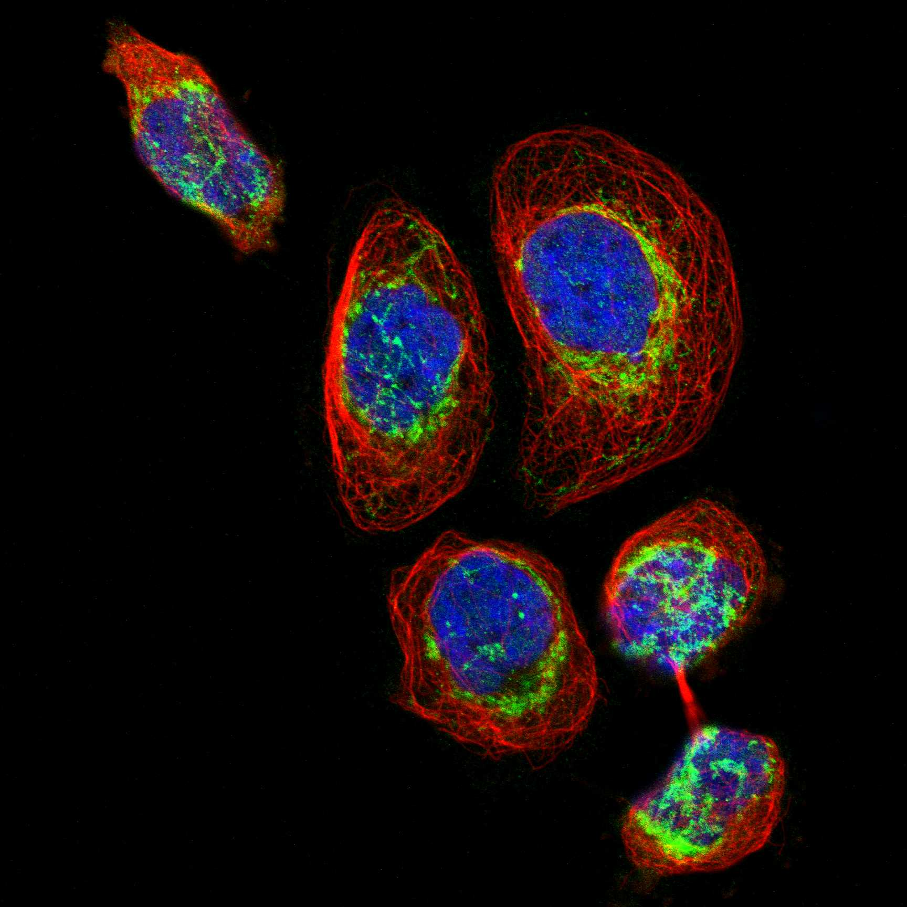
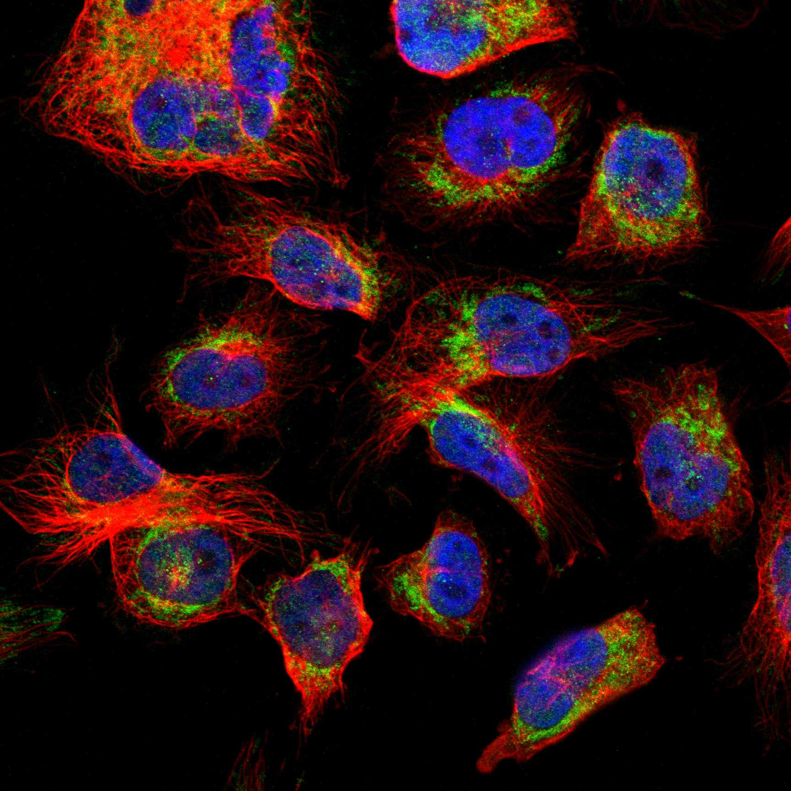
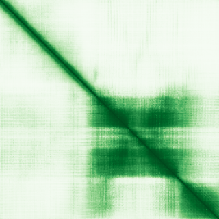

type: protein-evaluation gene: "FAM210A" date: 2026-06-03 tags: [protein-scout, nuclear-protein, evaluation] status: scored ---
FAM210A 核蛋白评估报告 (Full Re-evaluation)
1. 基本信息
| 项目 | 内容 |
|---|---|
| 基因名 / 别名 | FAM210A / C18orf19 |
| 蛋白名称 | Protein FAM210A |
| 蛋白大小 | 272 aa / 30.8 kDa |
| UniProt ID | Q96ND0 |
| 评估日期 | 2026-06-03 |
IF 图像:  
2. 评分总览
| 维度 | 得分 | 满分 | 加权后 | 关键证据摘要 |
|---|---|---|---|---|
| 核定位特异性 | 4/10 | ×4 | 16 | HPA: Nucleoplasm, Golgi apparatus, Mitochondria; UniProt: Membrane; Mitochondrion; Cytoplasm |
| 蛋白大小 | 10/10 | ×1 | 10 | 272 aa / 30.8 kDa |
| 研究新颖性 | 10/10 | ×5 | 50 | PubMed strict=16 篇 (≤20→10) |
| 三维结构 | 6/10 | ×3 | 18 | AlphaFold v6 pLDDT=64.6; PDB: 无 |
| 调控结构域 | 7/10 | ×2 | 14 | InterPro: IPR045866, IPR009688; Pfam: PF06916 |
| PPI 网络 | 3/10 | ×3 | 9 | STRING 13 partners; IntAct 15 interactions |
| 互证加分 | — | max +3 | 1.0 | PDB+AF+STRING+IntAct cross-validation |
| 原始总分 | 118.0/180 | |||
| 归一化总分 | 65.6/100 |
3. 详细分析
3.1 核定位证据
| 来源 | 定位 | 可信度 |
|---|---|---|
| Protein Atlas (IF) | Nucleoplasm, Golgi apparatus, Mitochondria | Approved |
| UniProt | Membrane; Mitochondrion; Cytoplasm | Swiss-Prot/TrEMBL |
IF 图像获取: IF图像已下载并嵌入 (2张)
GO Cellular Component:
- cytoplasm (GO:0005737)
- membrane (GO:0016020)
- mitochondrion (GO:0005739)
结论: 核定位信号较弱，多个数据源显示混合定位或非核偏好。
3.2 蛋白大小评估
评价: 大小适中（200-800 aa），适合常规生化实验和结构解析。
3.3 研究现状
| 指标 | 数值 |
|---|---|
| PubMed strict count | 16 |
| PubMed broad count | 23 |
| 别名(未计入scoring) | Aliases observed but not used for scoring: C18orf19 |
关键文献: 1. FAM210A is essential for cold-induced mitochondrial remodeling in brown adipocytes.. *Nature communications*. PMID: 37816711 2. FAM210A regulates mitochondrial translation and maintains cardiac mitochondrial homeostasis.. *Cardiovascular research*. PMID: 37522353 3. Modulators of Fam210a and Roles of Fam210a in the Function of Myoblasts.. *Calcified tissue international*. PMID: 31980842 4. Expression and purification of the mitochondrial transmembrane protein FAM210A in Escherichia coli.. *Protein expression and purification*. PMID: 37329934 5. Expression and purification of the mitochondrial transmembrane protein FAM210A in Escherichia coli.. *bioRxiv : the preprint server for biology*. PMID: 37292620
评价: 极度新颖，几乎未被系统研究（PubMed ≤20篇）。
3.4 三维结构分析
| 指标 | 数值 |
|---|---|
| AlphaFold 版本 | v6 |
| AlphaFold 平均 pLDDT | 64.6 |
| 高置信度残基 (pLDDT>90) 占比 | 7.7% |
| 置信残基 (pLDDT 70-90) 占比 | 41.2% |
| 中等置信 (pLDDT 50-70) 占比 | 16.9% |
| 低置信 (pLDDT<50) 占比 | 34.2% |
| 有序区域 (pLDDT>70) 占比 | 48.9% |
| 可用 PDB 条目 | 无 |
PAE (Predicted Aligned Error): 
评价: AlphaFold 预测质量有限（pLDDT=64.6），有序残基占 48.9%。
3.5 结构域分析
| 来源 | 结构域 |
|---|---|
| InterPro/Pfam | InterPro: IPR045866, IPR009688; Pfam: PF06916 |
染色质调控潜力分析: 存在已知结构域注释，可作为功能研究的结构基础。
3.6 PPI 网络
STRING 预测互作 (combined score >0.4):
| Partner | Combined Score | Experimental | 功能类别 |
|---|---|---|---|
| CD300C | 0.594 | 0.594 | — |
| ZBTB40 | 0.592 | 0.000 | — |
| ATAD3A | 0.585 | 0.292 | — |
| HIBADH | 0.573 | 0.000 | — |
| GFM1 | 0.546 | 0.000 | — |
| DCDC1 | 0.527 | 0.000 | — |
| SLC25A13 | 0.521 | 0.000 | — |
| CPED1 | 0.507 | 0.000 | — |
| STARD3NL | 0.494 | 0.000 | — |
| SPTBN1 | 0.493 | 0.000 | — |
实验验证互作 (IntAct):
| Partner | 方法 | PMID | ||
|---|---|---|---|---|
| BABAM1 | psi-mi:"MI:0007"(anti tag coimmunoprecipitation) | imex:IM-12079 | pubmed:19615732 | |
| menB | psi-mi:"MI:0398"(two hybrid pooling approach) | imex:IM-13779 | pubmed:20711500 | |
| IFT52 | psi-mi:"MI:2222"(inference by socio-affinity scori | pubmed:unassigned1312 | ||
| CD300C | psi-mi:"MI:0007"(anti tag coimmunoprecipitation) | pubmed:28514442 | doi:10.1038/na | |
| Orc2 | psi-mi:"MI:0007"(anti tag coimmunoprecipitation) | pubmed:26496610 | imex:IM-24272 | |
| BRICD5 | psi-mi:"MI:0007"(anti tag coimmunoprecipitation) | pubmed:33961781 | imex:IM-29278 | |
| LCN6 | psi-mi:"MI:0007"(anti tag coimmunoprecipitation) | pubmed:33961781 | imex:IM-29278 | |
| GPR182 | psi-mi:"MI:0007"(anti tag coimmunoprecipitation) | pubmed:33961781 | imex:IM-29278 | |
| EIF2B5 | psi-mi:"MI:0007"(anti tag coimmunoprecipitation) | pubmed:33961781 | imex:IM-29278 | |
| HCST | psi-mi:"MI:0007"(anti tag coimmunoprecipitation) | pubmed:33961781 | imex:IM-29278 |
PPI 互证分析:
- STRING + IntAct 均有数据
- STRING partners: 13，IntAct interactions: 15
- 调控相关比例: 0 / 13 = 0%
评价: STRING 13 个预测互作，IntAct 15 个实验互作。调控相关配体占比 0%。
3.7 多库互证
| 维度 | 来源 | 结果 | 是否一致 |
|---|---|---|---|
| 三维结构 | AlphaFold pLDDT=64.6 + PDB: 无 | pLDDT=64.6, v6 | 仅预测 |
| 定位 | UniProt + HPA | Membrane; Mitochondrion; Cytoplasm / Nucleoplasm, Golgi apparatus, Mitochondria | 一致 |
| PPI | STRING + IntAct | 13 + 15 interactions | 数据充分 |
互证加分明细:
- PDB + AlphaFold 双源验证: +0
- 多库定位一致 (3源): +0.5
- STRING + IntAct 双源验证: +0.5
- 结构域 + AlphaFold 质量: +0
- PDB 多条目覆盖: +0
总分: +1.0 / max +3
4. 总体评价
推荐等级: ⭐⭐⭐
核心优势: 1. FAM210A — Protein FAM210A，极度新颖，几乎未被系统研究（PubMed ≤20篇）。 2. 蛋白大小272 aa，大小适中（200-800 aa），适合常规生化实验和结构解析。
风险/不确定性: 1. PubMed 16 篇，研究基础极有限，功能注释不完整 2. AlphaFold 预测质量一般（pLDDT=64.6），需要更多实验结构验证
下一步建议:
- [ ] 查阅最新关键文献补充研究背景
- [ ] 获取 Protein Atlas IF 图像确认亚细胞定位
- [ ] 设计体外实验验证核定位及潜在调控功能
5. 数据来源
- UniProt: https://www.uniprot.org/uniprotkb/Q96ND0
- Protein Atlas: https://www.proteinatlas.org/ENSG00000177150-FAM210A/subcellular
- PubMed: https://pubmed.ncbi.nlm.nih.gov/?term=FAM210A
- AlphaFold: https://alphafold.ebi.ac.uk/entry/Q96ND0
- STRING: https://string-db.org/network/9606.ENSP00000
- Data fetched live: 2026-06-03